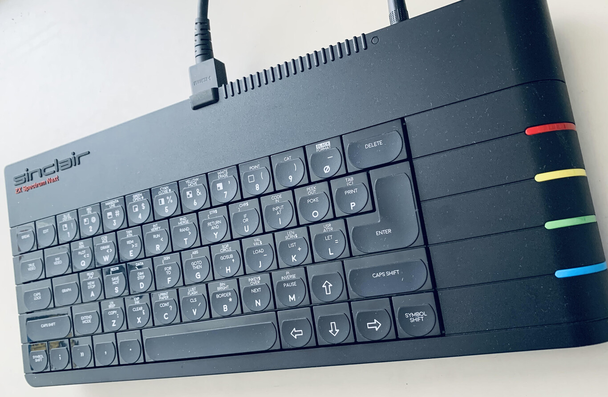
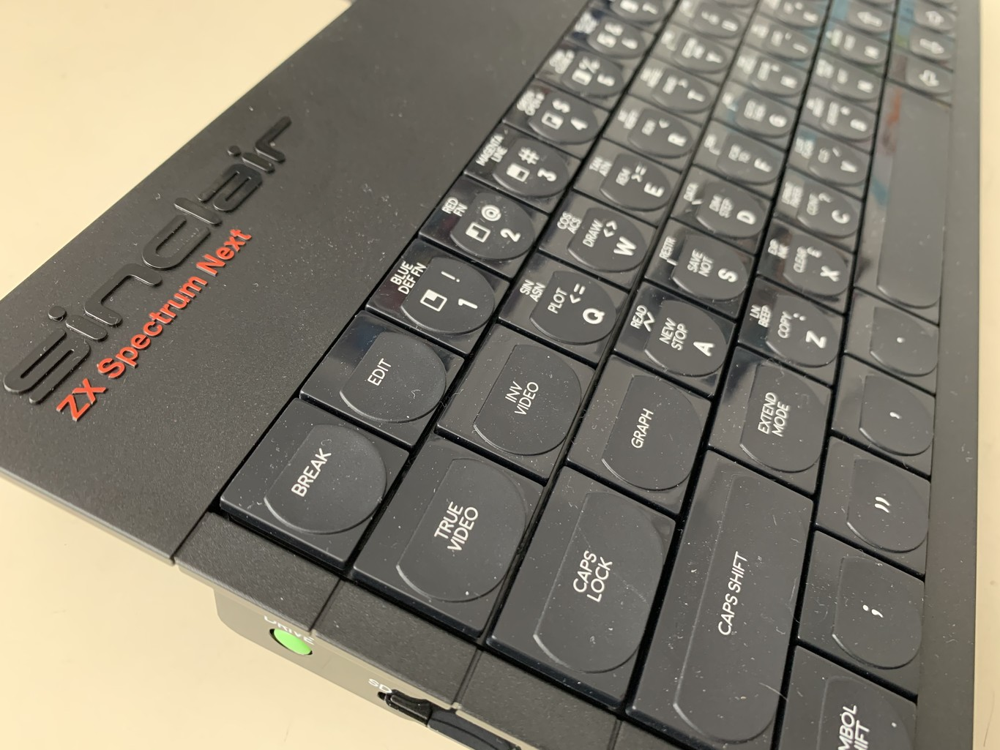
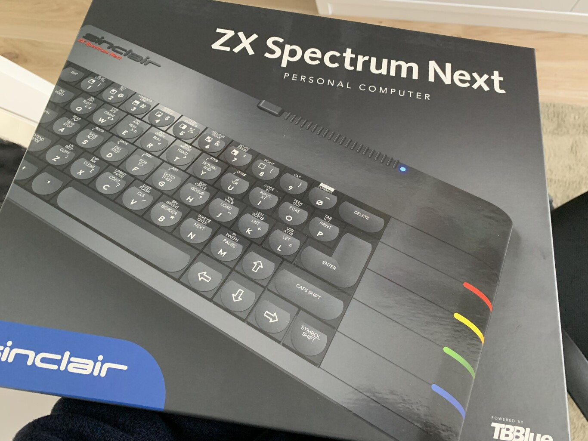
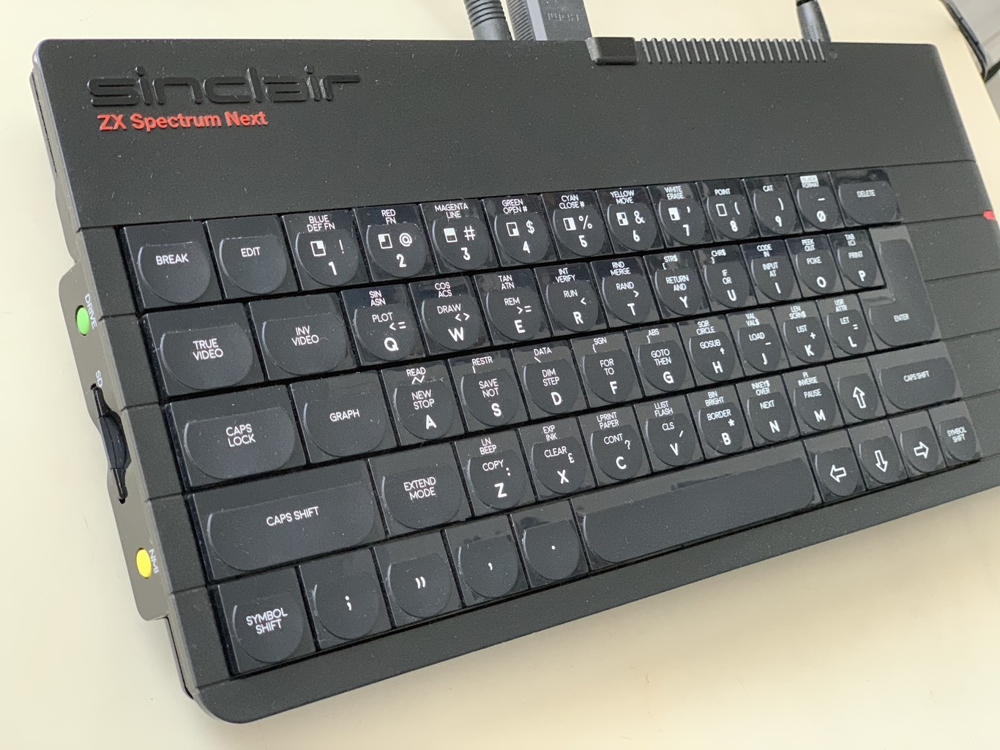
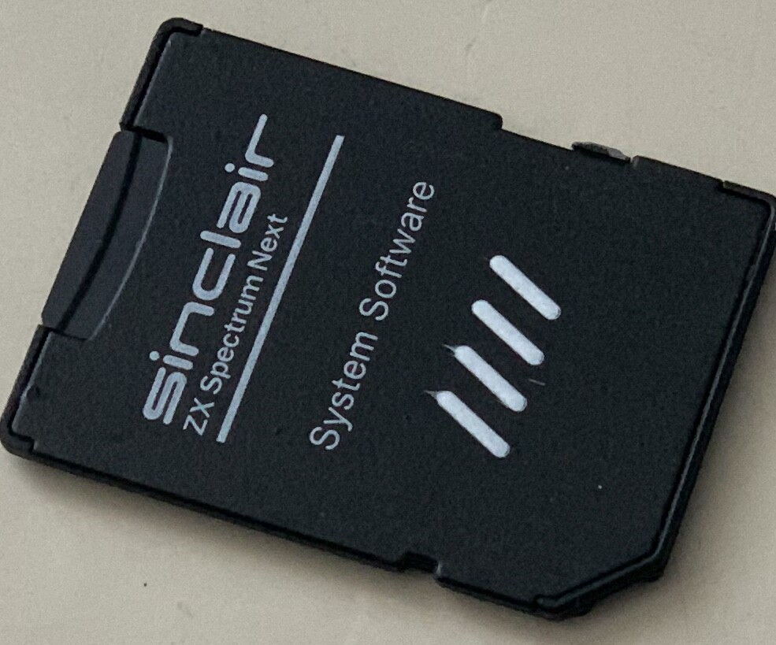
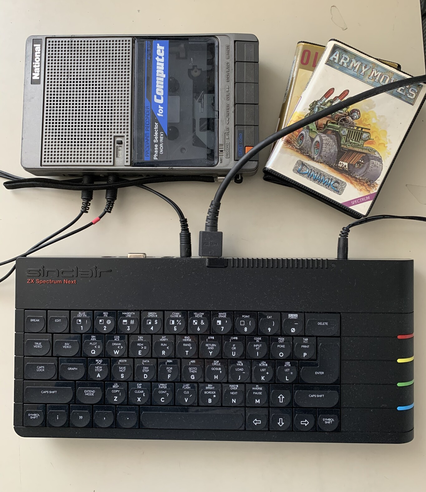
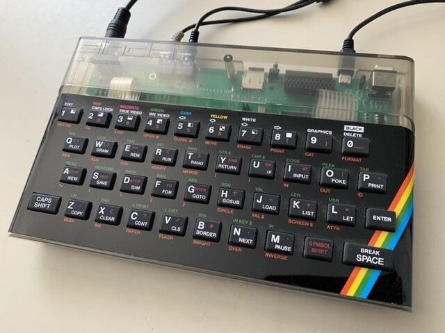

El ZX Spectrum Next es el dispositivo "revival" definitivo: lo he probado y merece cada euro que cuesta
Desde la mesa del estudio me está mirando un nuevo cacharrito, el ZX Spectrum Next, del que voy a intentar sintetizar en qué consiste. Siempre te aborda un poco de inquietud cuando debes pronunciarte objetivamente sobre un dispositivo revival del estilo de las consabidas SNES mini, NES mini, NEO GEO mini, Turbo Grafx, The64, PSX,...
“Para qué te gastas el dinero, yo tengo emulador en el PC y va de coña” “Pero si con una Raspi tienes no sólo la SNES sino todo lo de 8, 16 y 32 bits…” “La SNES mini es una Raspi capada con carcasa bonita que te la puedes imprimir tú en 3D”. Voy a saltar con una pirueta grácil y ligera sobre estos argumentos, y desistir de analizar al peso este nuevo ordenador de reciente aparición que reinterpreta el clásico ZX Spectrum.
Henrique Olifiers, maestro de ceremonias del proyecto, habla en los dos primeros párrafos de la presentación de su último Kickstarter (el segundo de este ordenador) de millones de personas con el corazón arrebatado por el Spectrum, de una generación de programadores nacida de sus teclas, y de árboles de Navidad y regalos de cumpleaños ochenteros. Así que no, que nadie me pida que explique si la decisión de arrasar tu billetera para pagar 400 euros por el Spectrum Next nace de una conexión neuronal racional o tiene más lógica que un capítulo de Territorio Lovecraft.

Me recuerdo a mí mismo siendo un niño en el stand de una feria agrícola en Aranjuez, entre tractores y cosechadoras. Qué razón había para que allí, bajo una pequeña carpa, estuviera conectado un ZX81, vaya usted a saber. Pero en los tímpanos de mi padre empezó a retumbar un clásico “lo quiero lo quiero lo quiero”, con cruel insistencia. Sobre mi cama apareció meses después la compacta caja de un ZX Spectrum 48K, que levanté y agité en aspavientos de triunfo e imaginando vítores de hobbits y enanos a la entrada de la Ciudadela Blanca. Mi padre palideció al ver cómo zarandeaba aquel aparato que había costado una nómina mensual, quizá más.
Así que las palabras que aquí escribo no son las de un experto en tecnología diseccionando los chips del Spectrum Next, sino la visión de un fan que pudo tenerlo bajo su árbol de Navidad o en su cumpleaños pero que al final lo tuvo en aquel episodio pleno de zarandeos apasionados. Puedes escribir en los comentarios: “¡Pero que son 400 pavos y la PS5 son 500!”. Oscar Wilde decía que un capricho se diferencia de una pasión eterna en que el capricho dura más. Os dejo hoy a vosotros la pasión por Sony, y yo me quedo, 40 años después, con el capricho de mi Spectrum.
El ZX Spectrum Next es un ordenador industrializado, aunque de tirada reducida, y de ahí su coste. Eso es lo que pretende ser, no un producto amateur montado en un garaje.
En hacerme con el ZX Spectrum Next tiene que ver un sinvergüenza. Unos cuantos en realidad. En 2016, la empresa Retro Computers lanzó una campaña para fabricar un dispositivo portátil, el Sinclair ZX Spectrum Vega Plus, que intentaba replicar el gran éxito de su producto anterior, el Vega (sin “plus”). Se trataba de una consolita con juegos de Spectrum que resultó bastante chapucera pero que al menos llegó a existir.
Los caraduras de esta nueva aventura, encabezados por David Levy y con el apoyo en redes del secuaz Lee Fogarty, protagonizaron una historia truculenta de dimisiones de directivos (Paul Andrews se fue para montarse su proyecto paralelo TheC64, y Chris Smith simplemente se escondió bajo una piedra, supongo) y fondos esfumados (más de medio millón de libras de los backers)… de los cuales 166,65 euros eran míos.
Quería probar ese capricho,, una consola portátil con licencia Sinclair que tan sólo contenía un pobre emulador, pero con un diseño realmente bonito del tristemente fallecido Rick Dickinson, diseñador del ZX81, el ZX Spectrum y el QL. La consola se esfumó: se enviaron unas decenas de prototipos a unos cuantos elegidos, y eso fue todo. Mis 166,65 euros (ah, ya os había dicho la cantidad, me gusta repetirla de vez en cuando) ya no estaban.
Y la confianza de los aficionados a los ordenadores “retro” en este tipo de proyectos se resintió. En 2017 saltó a la plataforma Kickstarter un proyecto que durante un tiempo se solapó con las incertidumbres del Vega+: el ZX Spectrum Next, un ordenador completo con un diseño precioso nuevamente de Rick Dickinson, y que proponía la tesis de una “evolución natural” de la arquitectura del ZX Spectrum, signifique esto lo que signifique.
Se valía de la tecnología FPGA, que para no resultar muy farragoso consiste en reprogramar la máquina en un chip actual para lograr no ya una emulación, sino una reimplementación de la máquina original en un nuevo hardware. La preservación, en suma, de un hardware original en un cacharrito moderno, que además permite que se implementen en él, si uno lo desea, muchos otros hardwares: Amstrad, Commodore, MSX, consolas de 8 bits o incluso de 16 (hay proyectos similares al Next pero usando como base una Super Nintendo).
Todo ello se hizo con el beneplácito de los propietarios de la marca Sinclair, Sky, que retiraron la licencia a los amigos de Retro Computers Ltd (los caraduras, ¿recordáis?). Las dudas razonables eran: ¿realmente un grupo de aficionados serían capaces de sacar adelante la fabricación de 3.000 o 4.000 ordenadores, y lidiar con fábricas chinas para que les proporcionen un teclado a la altura de las expectativas? ¿No se repetiría el pufo del Vega+?
Mi pequeño corazoncito herido se resistió en esta ocasión a sacar a pasear la tarjeta de crédito (bueno, es en realidad una cybertarjeta de recarga por la que La Caixa pretende cobrarme ahora comisiones de… me desvío, perdón) y preferí observar el devenir de los acontecimientos. Todo se retrasó enormemente, claro, cerca de año y medio sobre la fecha prevista de lanzamiento, en otoño de 2018. Pero los ordenadores comenzaron a llegar a principios de 2020. Cavilaba yo sobre mis 166,65 euros, cuando vi el tweet de un amigo que dudaba si conservar su Next aún por llegar.
Animado tal vez porque el ordenador era ya una certeza y empezaba a corroerme una cierta envidia, o tal vez porque arreciaba ya el coronavirus e íbamos a morir todos (y mejor disfrutar sin complejos nuestros últimos días), contacté con este amigo y le propuse comprárselo. “Con recuperar la inversión, me vale”. No fueron los 400 euros actuales, pero no andaban muy lejos. “Ojo, Jesús, piénsatelo que con eso casi te puedes comprar la PS5” (silencio incómodo).
Me envió por mensajero el ordenador nada más recibirlo, sin abrir la caja original más que para comprobar que dentro no había un Vega+ en su lugar. Al día siguiente, el capricho estaba consumado y el paquete, en manos de Oscar Wilde.

El Cacharro.
Es importante reseñar que el ZX Spectrum Next es un ordenador industrializado, aunque de tirada reducida (y de ahí su coste). Eso es lo que pretende ser, no un producto amateur montado en un garaje. La caja está elegantemente diseñada, impresa en cartón rígido, y con el grosor de la tapa anecdóticamente corta (¿quizá esperaban que el ordenador ocupara menos?).
En el interior, un profuso manual no sólo inspirado en el original, es decir, con el desarrollo del lenguaje BASIC a modo de curso, sino que se entrega correctamente encuadernado e impreso. Prometen en este segundo Kickstarter mejorar su acabado y añadirle color. Pero, ¿”y la europea”? ¿Y el ordenador?
Para mí, el gran reto de este proyecto era el teclado. Quizá parezca restar importancia al concepto del Next en sí, pero aclarémoslo: no era algo que al menos a mí me provocara excesiva curiosidad. ¿Un “nuevo” Spectrum? ¿Era de verdad necesario? ¿Tiene de forma realista algún recorrido como base de desarrollo?
El Next nace como una evolución del ordenador, algo que ya hizo el Sam Coupé en 1989 sin crowdfunding y, digámoslo así, con un resultado un tanto catastrófico. Adquirir una unidad del mismo te costará hoy día (apunten la paradoja económico-temporal) lo mismo que el Next. Este último ofrece un procesador Z80 a 3,5Mhz o 7Mhz, una memoria RAM de 512 Kb, la posibilidad de contar con una Raspi Zero como acelerador en el modelo Accelerated (¿necesita hoy día un Spectrum “acelerarse”?), salida HDMI, ranura SD y nuevos modos gráficos de mayor resolución y colorido (256 y 512 colores, y un modo de alta resolución).
Aparte de esta colección de características "novedosas", configurables a través de un sistema operativo propio, el ordenador puede usarse como un Spectrum de toda la vida, seleccionando el modelo deseado y sirviéndose de conectores que replican los clásicos: salidas y entradas de audio para el cassette, dos conectores de joystick, o salidas de video RBG si queremos usar un televisor CRT “de tubo”. Es decir, en mi mesa acabo de montar lo que a todas luces es “todos los Spectrums en uno”, pero con un aspecto inmejorable.

Porque el ordenador es condenadamente bonito. Sólo puedo afirmar que el teclado está conseguido: plástico, por supuesto, pero con un juego sutil de brillos y mates, y una pulsación de tecla escueta y elegante. Inspirado en el modelo Spectrum+, no cuenta como este con teclas de inyección de plástico en dos colores (lo que hace que sus teclas sean imborrables) así que la durabilidad de la impresión de las teclas es un misterio, pero aun así el resultado estético es precioso.
El teclado, inspirado en el modelo Spectrum+, está conseguido: plástico, por supuesto, pero con un juego sutil de brillos y mates, y una pulsación de tecla escueta y elegante.
Un detalle tonto, lo sé, pero estas tontunas me privan: el ordenador contiene la primera “tarjeta SD oficial” de Sinclair. Podéis tirar la microSD tranquilamente a la basura porque tiene una capacidad irrisoria, conservar el adaptador con el logo y haceros con una microSD en condiciones.
En esa tarjeta lo primero que hice, aparte de copiarme todo el catálogo de juegos, fue incluir los archivos de actualización del equipo, descargados de la web del Spectrum Next. Una actualización conveniente y que te regalará unos segundos incómodos mientras se ejecuta el proceso, porque perder 400 euros es más que perder sólo 166,65.

El menú principal del ordenador utiliza el mismo diseño que el clásico menú del Spectrum +2 o +3, dándonos la posibilidad en primer lugar de acceder al browser, que en la práctica es un minigestor de archivos que permite navegar por la SD, borrarlos, moverlos o, por supuesto, cargar cualquier juego en los formatos habituales .SNA, .Z80, .TAP o .DSK. Si tienes el modelo Accelerated, que incluye una Raspberry Zero de apoyo, podrás además cargar archivos .TZX, que emulan segundo a segundo la carga desde cinta de cualquier juego como si estuvieras usando un cassette real.
Cargar viejas cintas es algo que por cierto puedes hacer, si es que conservas (aparte de la cinta) un reproductor: basta con conectarlo al Spectrum Next usando, eso sí, un cable que no es el clásico, sino el que se utilizaba con el Spectrum +3. No hay que alarmarse, se puede obtener a través de páginas como Retrocables, aunque eso hará que tu Next se encarezca otros 5-10 euros.
¿Qué proporciona el Next respecto a utilizar un emulador de PC o una Raspberry bien surtida de juegos viejunos? Honestamente, el usuario medio no notará una variación significativa. La experiencia diferencial radica en usar un ordenador concebido como tal, con su pequeño sistema operativo y su teclado, centralizado para el disfrute de la plataforma que tan buenos momentos nos dio a principios de los 80.
¿Y los juegos específicos del Spectrum Next, merecen la pena? Eeeer… No. Siendo francos, los más prometedores se anunciaron hace tiempo y parecen no salir nunca (como 'Melkhior´s Mansion' o 'Wonderful Dizzy') y el resto son, en líneas generales, malos con avaricia. Algunos de ellos cuentan no obstante con ediciones físicas que pueden comprarse por 20-25 euros. Salvemos de la quema una excelente conversión de 'Scramble' y el colorista remake de 'Lord of Midnight'.
Curiosamente, hay un género concreto que se sirve muy bien de las nuevas capacidades gráficas de la máquina: las aventuras conversacionales. 'Rite of the Druid' es un agradable (y colorista) ejemplo de ello. Existen además “remakes” de viejas glorias de Magnetic Scrolls que saldan deudas con el Spectrum +3, cuyas versiones aparecieron en el mercado sin gráficos por la escasa capacidad visual del ordenador. 'The Pawn', 'Guild of Thieves' o 'Jinxter' cuentan ahora con los gráficos de Amiga adaptados: un apetecible plato para los aficionados.
Me he encontrado con una agradable sorpresa, ya que el ordenador actúa como un intérprete de Z-Machine, y es posible cargar archivos de éxitos de Infocom y de otras compañías. Además, lo hace con una visibilidad de texto mejorada gracias al modo en alta resolución del Spectrum Next (“alta” debería entrecomillarlo, sí, así mejor). 'Zork' y 'Trinity', o la adaptación del 'Autoestopista Galáctico', no pueden faltar en tu tarjeta SD.

Por tanto, me quedo del Next con su nueva forma, compacta y armada, de reinventar un Spectrum que se usa como tal, incluso con un BASIC mejorado, y en un hardware moderno con la imprescindible salida de video HDMI. ¿Merece la pena? Absolutamente. ¿Pero a qué precio?
Esa es la cuestión. Mirad, esto no es un producto de masas que te compras en la Fnac o en Amazon, es un proyecto de fabricación limitada, con gente que seguramente no tiene su base fiscal en Irlanda (hey, quizá ahora con la segunda campaña de Kickstarter y esos dos millones de libras recaudadas, SE LO ESTÁN PENSANDO) y fabricado parcialmente en UK. Un aparatejo caro de concebir.
Si tienes el dinero y decides invertirlo en esto, simplemente puedo asegurarte que acabarás satisfecho, siempre que todo este texto te haya quedado lo suficientemente claro. El Next no va a convertir el 'Jet Pac' en un juego con motor Unreal 4, ese reto se lo dejamos a Rare Ltd: lo vas a ver en su ancestral gloria y con una fidelidad absoluta a lo que tus ojos (o los de tus padres) vieron hace 40 años.

¿Hay alternativas con un concepto similar? Las hay, y dejemos a un lado los emuladores y las Raspberries. El proyecto ZXUNO nació en España para crear una placa FPGA tomando como base inicial el Spectrum y sus diferentes modelos, y de hecho los creadores del Next lo han estudiado con el rabillo del ojo, lo confiesen o no.
Lo que al principio era una placa en apariencia similar a una Raspi, ahora ha evolucionado con otros desarrolladores al gomaDOS+, un proyecto artesano que integra la placa en una carcasa que imita perfectamente el Spectrum 48K clásico, pero con unas características similares o superiores al Next. Incluso este último, (como “ordenador” y como “sistema operativo”) podría ser implementado en esta FPGA como en cualquier otra. No es barato, pero es una alternativa a considerar.
Todo depende ya de dos factores, mi querido amigo: tu bolsillo y tu corazoncito. Sin este último, cualquier desaprensivo te llamará loco por comprarte un Next. En mi locura, aún estoy pensando cómo demonios voy a ahorrar para comprarme en Navidades la PS5.